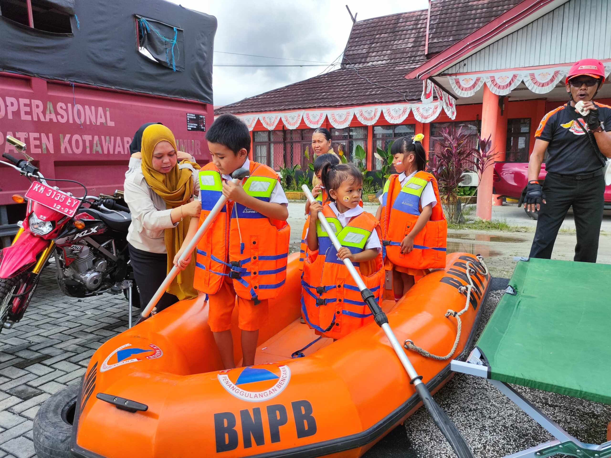
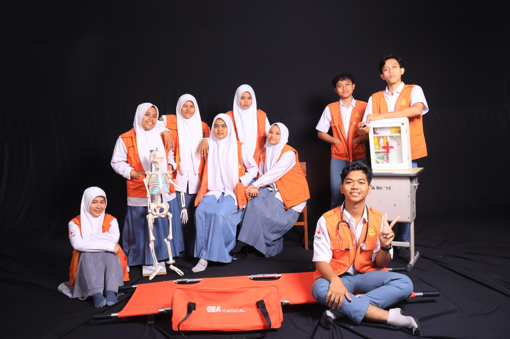

Desa Rahtawu merupakan salah satu desa di wilayah pegunungan Kabupaten Kudus, Jawa Tengah. Desa ini memiliki potensi alam yang indah serta sumber daya masyarakat yang aktif dalam kegiatan sosial dan lingkungan.
Namun demikian, kondisi geografis yang berada di lereng pegunungan menjadikan Desa Rahtawu memiliki potensi bencana seperti tanah longsor dan banjir. Oleh karena itu, masyarakat bersama pemerintah desa terus melakukan berbagai upaya mitigasi bencana.
Melalui program Desa Tangguh Bencana dan kegiatan PPK Ormawa, Desa Rahtawu berupaya menciptakan masyarakat yang tanggap, siap, dan mandiri dalam menghadapi bencana.
Berikut adalah lokasi Desa Rahtawu yang terletak di Kabupaten Kudus, Jawa Tengah.

Warga Desa Rahtawu mengikuti simulasi evakuasi bencana untuk meningkatkan kesiapsiagaan.

Pemerintah desa menghimbau masyarakat untuk waspada terhadap potensi banjir bandang.

Kegiatan penanaman akar wangi dilakukan untuk mencegah tanah longsor.
Pelajari cara menghadapi bencana seperti banjir dan tanah longsor melalui video edukasi berikut.
Berikut panduan praktis yang dapat digunakan masyarakat dalam menghadapi bencana.
Langkah-langkah menghadapi banjir mulai dari persiapan, saat kejadian, hingga pasca bencana.
Cara mengenali tanda-tanda longsor dan tindakan penyelamatan diri.
Panduan untuk keluarga dalam menghadapi kondisi darurat.

Perempuan memiliki peran penting dalam keluarga saat bencana. Siapkan tas siaga, dokumen penting, dan kebutuhan darurat keluarga.

Remaja diajarkan untuk tanggap terhadap situasi darurat, memahami jalur evakuasi, dan membantu proses penyelamatan.

Pastikan menjaga kesehatan, kebersihan, serta keamanan diri selama dan setelah bencana terjadi.
Denah ini menunjukkan jalur evakuasi, titik kumpul, dan area rawan bencana di Desa Rahtawu.

Budidaya maggot dilakukan untuk mengolah sampah organik sekaligus menjadi pakan ternak yang bernilai ekonomi bagi masyarakat Desa Rahtawu.
Simulasi evakuasi dilakukan untuk melatih masyarakat agar siap menghadapi bencana seperti banjir dan tanah longsor.
Penanaman akar wangi dilakukan di daerah lereng untuk memperkuat struktur tanah dan mencegah terjadinya longsor.